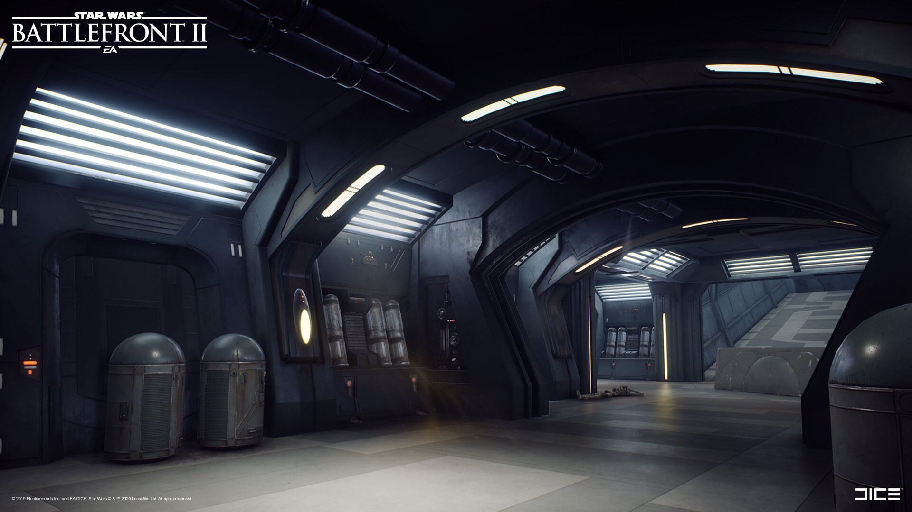

Star Wars - Inspired Corridor Design
Introduction
This project focuses on bringing the iconic design language of the Star Wars universe to life through a highly detailed corridor inspired by concept art from Star Wars Battlefront II. The goal was to create an environment that feels authentic to the Star Wars galaxy, blending futuristic industrial design with atmospheric lighting to create an immersive and believable setting.
Star Wars: Battlefield II Concept Art:

Problem Statement
Translating concept art into a fully realized 3D environment presents several challenges, including maintaining visual fidelity while ensuring the design is optimized for real-time rendering. Balancing detailed geometry with efficient performance was critical, as was capturing the atmospheric mood that defines Star Wars interiors.
Design & Development
The design process began by analyzing the source concept art to identify key visual elements such as color schemes, textures, and lighting. The corridor was meticulously modeled in Blender, focusing on intricate paneling, piping, and surface wear to reflect the utilitarian Star Wars aesthetic. Once imported into Unreal Engine 5, Lumen was used to implement dynamic lighting, enhancing the realism with subtle reflections and shadows. Nanite technology allowed for high-polygon assets without compromising performance, ensuring a seamless and immersive experience.

Key Features
Detailed Modeling
The corridor features highly detailed models created in Blender, including modular wall panels, conduits, and control terminals, designed to reflect the lived-in, industrial feel of the Star Wars universe.
Dynamic Lighting
Using Unreal Engine 5's Lumen system, dynamic lighting was implemented to simulate realistic reflections, shadows, and ambient light, capturing the dark and atmospheric tone characteristic of Imperial interiors.
Atmospheric Design
Environmental storytelling was integrated through props and texture details, such as scuffed floors, exposed wiring, and flickering lights, to create a sense of history and function within the corridor.
Final Result
The finished corridor successfully captures the essence of Star Wars, blending high-detail modeling with sophisticated lighting to create a space that feels both cinematic and interactive. The project demonstrates how modern game development tools can faithfully recreate iconic designs while pushing the boundaries of visual fidelity.

×
❮
 ❯
❯